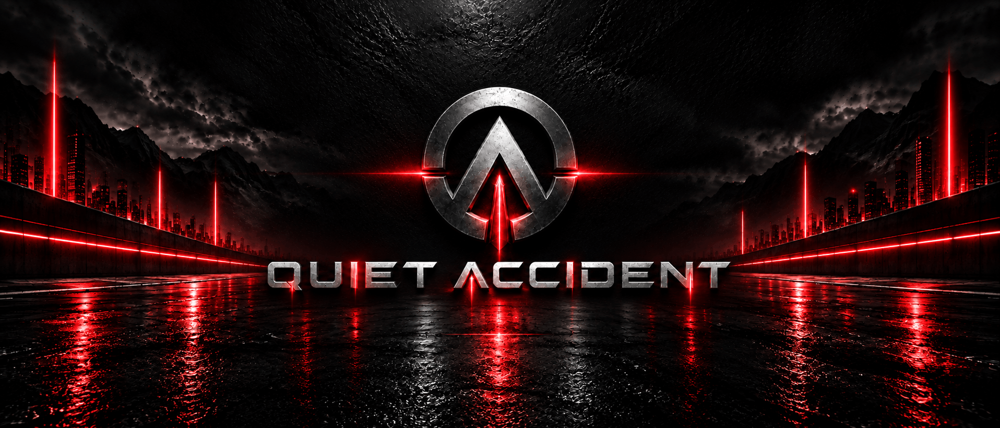

Independent electronic musicDarkness / Motion / Sound

QUIET ACCIDENT
SOUND FOR THE ROAD AFTER DARK.
Deep bass. Hypnotic rhythms. Cinematic tension.
Electronic music built for the road ahead.

Latest release / Single
Halia Drift
HALIA DRIFT turns the Ukrainian folk melody “Nese Halia Vodu” into a dark electronic track built for sideways turns. Heavy bass, sharp synths and short Ukrainian vocal lines cut through the tire smoke.
View ReleaseThe catalogue
After-dark transmissions.


The project
Somewhere between
silence and impact.
Quiet Accident moves between driving techno, dark electronic textures and melodic tension. Music for empty highways, midnight cities and the moments when sound becomes part of the road.
Discover the Project ↗